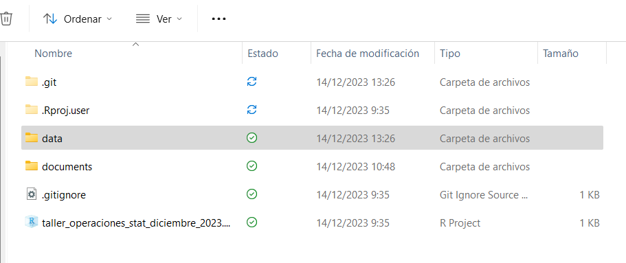
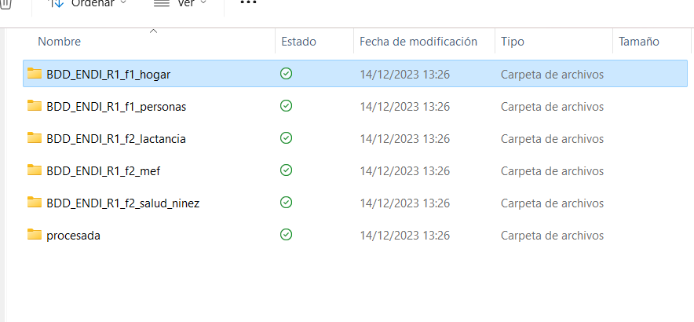
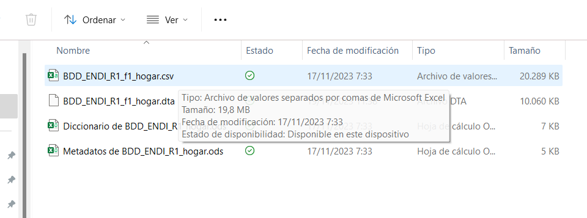
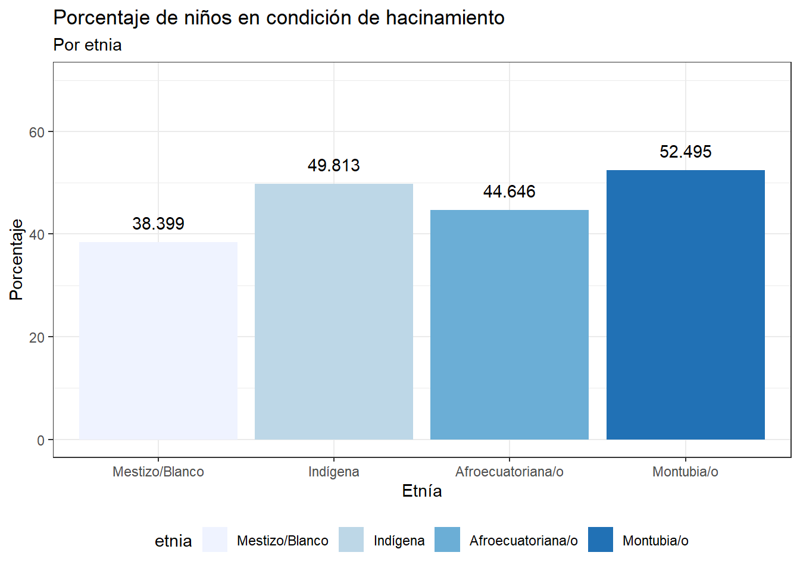

Paso a pasa para el análisis de una operación estadística
Author
Centro de Investigación Estadística ERGOSTATS
Allá por 2016 ….
Un joven Alex Bajaña trabajaba en su trabajo de tesis. Bajo la dirección de Juan Pablo Diaz escribí el trabajo Los efectos del hacinamiento sobre la salud y bienestar de los niños. Con este trabajo me gradué de Ingeniero en Ciencias Económicas y Financieras. Terminar ese trabajo de investigación no fue solo mi mérito sino de algunos compañeros, como Miguel, de quien hablamos en el Webinar anterior.
En ese entonces conocía poco de R y su utilidad para hacer no solo la estimación de mis modelos sino tambien para trabajar a la par en la redacción de mi documento. En ese entonces trabaje con cuatro herramientas (😬):
SPSS, para generar el análisis exploratorio, limpieza de datos y la estimación de mis modelos.
Microsoft Excel, para generar mis gráficos que irían en mi tesis
Microsoft Word, para editar mi documento con los insumos de SPSS y Excel.
LaTex, para trabajar en la presentación.
Tres doritos despues, con la vida laboral adquirí mucha experiencia en el uso de R, aprendí otras herramientas y estoy aprendiendo algunas otras, nunca se deja de aprender. (🤓). Si bien en ese entonces debía emplear estas cuatro herramientas, hoy en día tenemos herramientas que integran todas estas funcionalidades en un solo lugar: Rstudio. En este IDE podemos trabajar con dos tipos de archivos Rmarkdown y Quarto.Si bien cada uno de ellos tiene sus particularidades, ambos proveen a nosotros los analistas de datos, una interfaz de fácil uso que integra el código y la narrativa. 😻
En este Webinar, Paso a pasa para el análisis de una operación estadística, vamos a:
Presentar la aproximación a la invesigación que hiciera ahora con un documento Quarto
Replicar algunos resultados de mi tesis, con algunos apuntes sobre visualización
Comparar los resultados de los modelos que realice para crear discusión acerca del uso de operaciones estadísticas
Vamos por ello:
Definición de la pregunta de invesigación
Busqueda de fuentes de información y elección de la herramienta de trabajo
Definición de un directorio de trabajo con un proyecto
Principio de reproducibilidad: Replica de indicadores publicados
Apuntes sobre visualización
Replica de resultados de mi tesis
Resumen y cierre
En el viaje hacia la comprensión de los efectos del hacinamiento sobre la salud y bienestar de los niños en Ecuador, partí de la Encuesta de Condiciones de Vida (ECV). Manejar este instrumento, fue un verdadero desafio, con mi directorio nos propusimos entonces explorar las múltiples dimensiones y factores que impactan en el bienestar y la salud de los niños ecuatorianos.
Como investigador novato, enfrenté la inexperiencia y la vastedad de un océano de datos. Sin embargola claridad con la que mi director planeteó la pregunta de investigación facilitó las cosas muchisimo. si tuviera que plantearla nuevamente escribiria lo siguiente:
Controlando por las características del niño, el hogar y la vivienda ¿en que medida la condición de hacinamiento incrementa la probabilidad de que un niño contraiga alguna afección respiratoria o estomacal?
Puede consultar más sobre la ECV en su página oficial aquí.
Una pregunta de investigación bien clara y definida nos acolita a:
Dirigir el proceso de análisis hacía hallazgos que aporten evidencia a nuestras hipotesisi y supuestos.
Dirigir la interpretación de los resultados
Darle humanidad a los datos que por si solos son insumos potenciales
Comprender las limitaciones, alcances y sesgos de nuestra investigación que pueden introducirse voluntaria e involuntariamente
Facilita la comunicación de los resultados y metodologias empleadas
Definición de la pregunta de invesigación
Busqueda de fuentes de información y elección de la herramienta de trabajo
Definición de un directorio de trabajo con un proyecto
Principio de reproducibilidad: Replica de indicadores publicados
Apuntes sobre visualización
Replica de resultados de mi tesis
Resumen y cierre
Datos
Como mencioné, en mi trabajo de tesis trabaje con la Encuesta de Condiciones de Vida, pero en esta ocasión voy a trabajar con la Encuesta Nacional sobre Desnutrición Infantil (ENDI). Ambas son operaciones estadística desarrolladas por el Instituto Nacional de Estadísticas y Censos. La ENDI es una herramienta para conocer la situación nutricional de las niñas y niños menores de 5 años en Ecuador. En ese sentido, la ENDI ofrece variables con definiciones suficientes para poder replicar los resultados que presente en mi trabajo de tesis. (💫)
La ENDI es la primera encuesta longitudinal especializada en estudiar la desnutrición infantil y sus determinantes en el país. Fue desarrollada para proporcionar información oportuna y continua que permitiera seguir la desnutrición crónica infantil, una condición que puede llevar a problemas de aprendizaje, sobrepeso, obesidad, enfermedades no transmisibles en la adultez y dificultades laborales en la vida adulta
La ENDI se implementa a través de una muestra nacional recolectada durante 12 meses, donde personal capacitado realiza:
Mediciones antropométricas de los niños y otras características
Tomas de sangre
Pruebas de la calidad del agua
Condiciones de la vivienda y el hogar
Acceso a controles prenatales, esquemas de vacunación y programas de primera infancia
Solo por nombrar algunas relevantes para nuestro webinar. En cuanto al diseño muestral, la ENDI es una encuesta continua distribuida homogéneamente en el tiempo y espacio a través de una agregación de muestra mensual. La cobertura de la encuesta es nacional, abarcando áreas urbanas y rurales, con una representatividad de 24 provincias y un dominio auto representado que incluye un agregado de 728 parroquias priorizadas, con una muestra de 22.848 viviendas. 🏘️
Para asegurar la calidad, se realizaron pruebas piloto, se contó con la capacitación de entidades como UNICEF y el Ministerio de Salud Pública (MSP), y se supervisaron todos los niveles de recolección de datos. Además, se hicieron seguimientos de atípicos y se tomaron medidas para garantizar la integridad de la información durante el procesamiento y análisis.
Aquí he realizado un resumen muy reducido de la complejidad que representa llevar a cabo este tipo de operaciones estadísticas. Antes del uso de la base de datos, debemos hacer una evaluación de los datos. Entonces ,aquí les comparto el orden en que lei la documentación de la ENDI y su relación con la pregunta planteada:
Dicho esto, vamos ya a trabajar con la ENDI para responder nuestra pregunta de investigación, por que la ENDI tiene el sello de aprobación de Chuck Norris ya que tiene variables suficientes para replicar algunos resultados interesantes de mi tesis.
Herramienta de trabajo
Ya mencioné una cuantas ventajas de los archivos Quarto, pero vamos con algunos detalles. La principal ventaja de los documentos Quarto es la capacidad de integrar código, narrativa e incluso otros lenguajes en un solo archivo, en un solo entorno de desarrollo (RStudio, Visual Studio Code, JetBrains). (👌) Otra razón para usar Quarto, es la facilidad para hacer citas bibliográficas, los documentos de la documentación como los metadatos y la metodología. vamos citarla facilmente.
Y la razón por la que más me gustan estos documentos es que puedo mantener mi investigación documentada de manera reproducible, con código y comentarios detallados que clarifican cada paso del proceso. Sumemosle, la flexibilidad de Quarto para generar salidas en múltiples formatos asegura que los hallazgos de nuestra investigación sean accesibles para una audiencia amplia, desde colegas académicos hasta responsables de la formulación de políticas. Para este ejercicio vamos a usar Quarto y R para responder a la pregunta de investigación.
Definición de la pregunta de invesigación
Busqueda de fuentes de información y elección de la herramienta de trabajo
Definición de un directorio de trabajo con un proyecto
Principio de reproducibilidad: Replica de indicadores publicados
Apuntes sobre visualización
Replica de resultados de mi tesis
Resumen y cierre
Es esencial tener un ambiente de trabajo organizado y estructurado. Aquí te muestro cómo configurar tu proyecto en RStudio y cómo Quarto puede jugar un papel crucial en tu análisis.
1. Nombrar tu Proyecto
El nombre del proyecto debe ser descriptivo pero conciso. Por ejemplo, si tu investigación se centra en el hacinamiento y la salud infantil, podrías nombrar tu proyecto como “salud_hacinamiento_ninez”. Esto facilitará la identificación del proyecto y su propósito a primera vista.
2. Crear un Proyecto en RStudio
En RStudio, crea un nuevo proyecto:
Ve a File > New Project.
Selecciona New Directory para comenzar desde cero.
Elige un proyecto de R.
Escribe el nombre que has elegido y selecciona una ubicación adecuada en tu sistema de archivos.
RStudio creará una nueva carpeta con el nombre del proyecto.
3. Organizar las Carpetas
La descarga de la base de datos la puedes realizar en este enlace. La carpeta del proyecto debe verse asi:

Una vez descargados y descomprimidos los archivos de la ENDI, el directorio data/ debe verse de la siguiente manera:

En la carpeta de cada una de las bases de datos están los siguientes archivos:

Una vez que hayas creado el proyecto, estructura tus carpetas de la siguiente manera:
data/: para almacenar conjuntos de datos.
documents/: para tus scripts de R, archivos Quarto y otros documentos relacionados con el análisis.
figures/: para las visualizaciones generadas.
scripts/: para scripts de R más generales o de configuración.
4. Uso de here para Acceder a Datos
El paquete here es excelente para hacer referencia a archivos dentro de tu proyecto sin preocuparte por la ruta absoluta. Instálalo utilizando install.packages("here") y luego simplemente usa here::here() para construir rutas relativas dentro de tus archivos Quarto. Para este análisis vamos a utilizar las bases de datos de la ENDI en formato .dta nativo de Stata. Estos archivos conservan las etiquetas y otros meta datos utiles para nuestro análisis. Empecemos con el análisis con la carga de librerias y la lectura de la base de datos:
# Manejo de bases de datoslibrary(tidyverse)
── Attaching core tidyverse packages ──────────────────────── tidyverse 2.0.0 ──
✔ dplyr 1.1.2 ✔ readr 2.1.4
✔ forcats 1.0.0 ✔ stringr 1.5.0
✔ ggplot2 3.4.3 ✔ tibble 3.2.1
✔ lubridate 1.9.2 ✔ tidyr 1.3.0
✔ purrr 1.0.2
── Conflicts ────────────────────────────────────────── tidyverse_conflicts() ──
✖ dplyr::filter() masks stats::filter()
✖ dplyr::lag() masks stats::lag()
ℹ Use the conflicted package (<http://conflicted.r-lib.org/>) to force all conflicts to become errors
# Fácil acceso a los datoslibrary(here)
here() starts at C:/Users/alex_ergostats/OneDrive/Documentos/ergostat_administrativo/talleres_externos/taller_operaciones_stat_diciembre_2023
# Manejo de encuestas complejaslibrary(srvyr)
Attaching package: 'srvyr'
The following object is masked from 'package:stats':
filter
library(survey)
Warning: package 'survey' was built under R version 4.3.2
Loading required package: grid
Loading required package: Matrix
Attaching package: 'Matrix'
The following objects are masked from 'package:tidyr':
expand, pack, unpack
Loading required package: survival
Attaching package: 'survey'
The following object is masked from 'package:graphics':
dotchart
# Lectura de archivos Statalibrary(haven)# Impresion de tablas lindaslibrary(gt)library(gtsummary)library(gtExtras)
Por ejemplo si queremos usar una base de datos en específico:
# Base de datos de personas y caracteristicas, madres y niños:data_personas <-read_dta( here::here("data", "BDD_ENDI_R1_f1_personas","BDD_ENDI_R1_f1_personas.dta"))# Base de datos con caracteristicas del hogar:data_hogar <-read_dta( here::here("data", "BDD_ENDI_R1_f1_hogar","BDD_ENDI_R1_f1_hogar.dta"))# Salud de los niños y controles:data_salud_ninez <-read_dta( here::here("data", "BDD_ENDI_R1_f1_hogar","BDD_ENDI_R1_f1_hogar.dta"))
Quarto y la librería here funcionan de maravilla juntos.
5. Archivo .bib para Referencias Bibliográficas
Dentro de la carpeta documents/, crea un archivo BibTeX (.bib) que contendrá todas tus referencias bibliográficas. En Quarto, puedes citar estas referencias utilizando la sintaxis adecuada y Quarto las incorporará automáticamente en tu documento final.
6. Crear un Archivo Quarto
Dentro de documents/, crea un archivo Quarto (.qmd) donde realizarás todo tu análisis y escritura. En la parte superior de este archivo, configura el uso del archivo .bib para las referencias:
Cómo Incluir Bibliografía
Si estás usando Quarto o R Markdown, puedes incluir un archivo .bib para las referencias bibliográficas:
---title: "Tu Análisis"output: html_documentbibliography: bibliografia.bib---Tu texto...Referencia a un paper [@tuReferencia].
En bibliografia.bib, incluye las referencias en el formato adecuado. Por ejemplo:
@article{tuReferencia,title={Título del artículo},author={Autor, A.},journal={Nombre del journal},year={2020},volume={10},pages={100-110}}
Consejos Finales
Versiona tu Proyecto: Utiliza un sistema de control de versiones como Git desde el principio.
Comentarios y Documentación: Documenta tu código y tu análisis extensamente. Explica qué estás haciendo y por qué.
Respalda tus Datos: Asegúrate de tener copias de seguridad de tus datos y tu proyecto.
¡Y eso es todo! Con estos pasos, tienes una base sólida para comenzar tu proyecto de investigación con R y Quarto. Recuerda, la organización y la documentación son claves para un proyecto exitoso y reproducible.
Como mencioné la idea de trabajar con los archivos .dta es el aprovechar los atributos de las columnas dependiendo de su tipo, veamos algunos casos:
# Variable de identificación de UPMattributes(data_personas$id_upm)
$label
[1] "Identificador de upm"
$format.stata
[1] "%-9s"
# Variable categórica de región:attributes(data_personas$region)
$label
[1] "Región"
$format.stata
[1] "%10.0g"
$class
[1] "haven_labelled" "vctrs_vctr" "double"
$labels
Sierra Costa Amazonía
1 2 3
# Variable numérica (toma 1 de la talla):attributes(data_personas$f1_s5_5_1)
Warning in rm(data_personas, data_hogar, data_hogar): objeto 'data_hogar' no
encontrado
Si deseas ver los atributos de todas las columnas en la consola puedes utilizar:
map(data_personas, attributes)
Esta instrucción te devolverá una lista, su longitud dependerá del número de variables en la base de datos.
Definición de la pregunta de invesigación
Busqueda de fuentes de información y elección de la herramienta de trabajo
Definición de un directorio de trabajo con un proyecto
Principio de reproducibilidad: Replica de indicadores publicados
Apuntes sobre visualización
Replica de resultados de mi tesis
Resumen y cierre
Para calcular la desnutrición crónica infantil y otros indicadores relevantes a partir de la Encuesta Nacional sobre Desnutrición Infantil (ENDI) en R, primero debes establecer un proyecto organizado y estructurado. Aquí está un resumen simplificado del proceso:
Proceso de Cálculo de la Desnutrición Crónica Infantil:
Preparación de Datos:
Importar el conjunto de datos y seleccionar las variables necesarias, como la edad en días, el sexo y medidas antropométricas.
Cálculo de Z-Scores:
Utilizar la edad en días y medidas antropométricas (peso, longitud/talla) para calcular los Z-scores correspondientes a peso-para-edad, longitud/talla-para-edad, y peso-para-longitud/talla utilizando estándares de la OMS.
Identificación de Desnutrición Crónica:
Clasificar a los niños con un Z-score de longitud/talla-para-edad por debajo de -2 como desnutridos crónicamente.
Ajuste por Factores de Expansión:
Ajustar los cálculos de prevalencia de desnutrición utilizando el factor de expansión del niño para obtener estimaciones representativas a nivel nacional.
Cálculo del Proceso de Eliminación de Excretas:
Selección de Variables:
Determinar la variable que indica el método principal de eliminación de excretas en el hogar.
Clasificación de Prácticas:
Clasificar las prácticas de eliminación de excretas en categorías de adecuación, basadas en criterios de salud pública y saneamiento.
Indicador de Agua Segura:
Selección de Variables:
Seleccionar las variables relacionadas con la fuente de agua y los resultados de pruebas de calidad del agua, como la presencia de cloro y E. coli.
Cálculo del Indicador:
Clasificar las fuentes de agua como “segura” o “no segura” basándose en las pruebas de calidad y las pautas de la OMS.
Cálculo de Otras Variables:
Para el resto de las variables, seguirás una metodología similar, seleccionando las variables apropiadas de la ENDI, realizando cálculos o clasificaciones basadas en definiciones establecidas y ajustando por factores de expansión cuando sea necesario. Este proceso deberá estar guiado por la metodología y guía de uso de la base de datos de la ENDI, que proporcionará detalles específicos sobre cómo se deben manejar y calcular cada una de las variables.
Cada paso del proceso debe ser documentado cuidadosamente y las decisiones metodológicas deben ser claras y justificadas. Al trabajar con datos de la ENDI, es crucial tener en cuenta los aspectos éticos, como la confidencialidad y el consentimiento informado, y asegurarse de que el uso de los datos esté en línea con los términos establecidos por la institución proveedora de los datos.
La sintaxis de construcción de la base de datos para el webinar lo puedes encontrar en scripts/script.R
Mientras que la sintaxis oficial del INEC puedes descargarla de este enlace.
Con la sintaxis señalada tenemos los siguientes resultados que podemos comparar con los resultados publicados por el INEC en su página web lo cual es una buena noticia para continuar nuestro analisis.
Ya entrando en materia es importante señalar que es una muestra compleja, y que está compuesta por 5 bases de datos de las cuales usaremos 3:
BDD_END_R1_f1_hogar la cual contiene información acerca de las características del hogar y la vivienda.
BDD_END_R1_f1_personas la cual contienen información sobre los miembros de las viviendas dentro del marco de muestreo.
BDD_END_R1_f2_salud_ninezla cual contiene información acerca del estado de salud de los niños en sus distintas tomas de muestra.
Con estas tres bases de datos se construyó la base de datos de trabajo para este Webinar. La guarde en formato .rds para que me sea más fácil leer desde R. Ya que mantuve la estructura de la base de datos de niños, ahora vamos a leer la base de datos para luego emplear srvyr para declarar mi diseño maestral y empezar nuestro análisis.
# Lecturabase_trabajo <-read_rds( here::here("data", "procesada","base_final_para_modelo.rds"))# Antes de iniciar con el diseño muestral vamos a calcular la variable clave:base_trabajo <- base_trabajo %>%mutate(hacinamiento = personas_por_hogar / habitaciones,hacinamiento =if_else( hacinamiento >=3,true =1,false =0,missing =NA_real_))# Diseño muestralsurvey_design <- base_trabajo %>%as_survey_design(ids ="id_upm",strata ="estrato",weights ="fexp" )survey_design
Busqueda de fuentes de información y elección de la herramienta de trabajo
Definición de un directorio de trabajo con un proyecto
Principio de reproducibilidad: Replica de indicadores publicados
Apuntes sobre visualización
Replica de resultados de mi tesis
Resumen y cierre
Vaya recorrido que hemos echo para iniciar el código para el análisis de los efectos del hacinamiento sobre la salud y bienestar de los niños. Empezare con una pequeña anotación, los resultados aquí presentados están sujetos a mejora (todos los análisis tienen esa propiedad) hay mucho que hacer antes de utilizar estos resultados de manera definitiva. El objetivo del Webinar es ilumar el camino sobre como abrodar las operaciones estadísticas para responder una pregunta de investigación.
Primero hagamos un resumen simple:, por suerte gtsummary tiene una función bastante útil para hacer el análisis preliminar:
# Antes vamos a darle atributos a la variable de hacinamiento:attr(base_trabajo$hacinamiento,"label") <-"Condición de hacinamiento"base_trabajo %>%select(quintil,region,area,diarrea, respiratorias, n_hijos, personas_por_hogar, hacinamiento) %>%tbl_summary()
Characteristic
N = 18,7281
Quintil
Quintil 1
3,765 (20%)
Quintil 2
3,363 (18%)
Quintil 3
3,495 (19%)
Quintil 4
3,642 (19%)
Quintil 5
4,463 (24%)
Región
Sierra
9,366 (50%)
Costa
5,682 (30%)
Amazonía
3,680 (20%)
Área
Urbano
11,369 (61%)
Rural
7,359 (39%)
Diarrea
3,655 (20%)
Infecciones respiratorias
10,288 (55%)
# de hijos
2 (1, 3)
Personas por hogar
4 (4, 6)
Condición de hacinamiento
6,776 (36%)
1 n (%); Median (IQR)
Pero lo importante es ver los datos ponderados para ello empleamos la familia de funciones de la librería survey además debemos emplear nuestro diseño muestral. Por ultimo, vamos a imprimir la tabla con gtsummary.
survey_design %>%survey_count(area,hacinamiento) %>% dplyr::group_by(area) %>%gt() %>%cols_label(hacinamiento ="Niño en condición de hacinamiento",n ="Niños",n_se ="Error Estandar") %>%gt_theme_nytimes()
Niño en condición de hacinamiento
Niños
Error Estandar
Urbano
0
7329.159
162.1576
1
4792.916
198.5300
Rural
0
3842.994
115.9166
1
2796.525
106.7995
Hagamos unos cálculos adicionales antes de continuar con la visualización de datos:
# edad media en días: por sexosurvey_design %>%group_by(sexo, hacinamiento) %>%summarise( mean_edad_en_días =survey_mean(edad_en_días, na.rm =TRUE), sd_edad_en_días =survey_sd(edad_en_días, na.rm =TRUE) ) %>%gt() %>%gt_theme_nytimes()
hacinamiento
mean_edad_en_días
mean_edad_en_días_se
sd_edad_en_días
Mujer
0
975.3620
10.22349
510.9262
1
908.6124
14.85242
505.7143
Hombre
0
965.3533
10.42491
515.7492
1
882.4268
13.22056
511.9667
# Vamos a mejorar esta tabla :)
Ahora que hemos realizado ya un primer cálculo de los momentos de una variable numérica, hagamos un T-test para determinar si existe una diferencia significativa entre el numero de hijos que existen en hogares en condición de hacinamiento y hogares que no están en esta condición.
# Numero de hujos en los hogares de niños que viven en hogares con condición de hacinamiento.survey_design %>%survey_count(hacinamiento,n_hijos) %>%select(-n_se) %>%pivot_wider(names_from = hacinamiento,values_from = n)
Warning in m$df.resid: encuentros parciales de 'df.resid' to 'df.residual'
Design-based t-test
data: n_hijos ~ hacinamiento
t = 6.191, df = 2674, p-value = 6.899e-10
alternative hypothesis: true difference in mean is not equal to 0
95 percent confidence interval:
0.1562284 0.3010658
sample estimates:
difference in mean
0.2286471
Ahora que ya hemos utilizado de forma variada las funciones de survey y srvyr. Con ustedes queridos asistentes del webinar vamos a utilizar ggplot2 para reproducir y mejorar los gráficos de mi tesis:
prop_hacinamineto <- survey_design %>%group_by(etnia) %>%summarise(props =survey_mean(hacinamiento,proportion =TRUE,vartype =c("se", "ci", "cv"),na.rm = T ) *100 ) grafico <- prop_hacinamineto %>%ggplot(aes(x = etnia,y = props, fill = etnia)) +geom_col() +geom_text(aes(label =round(props,3)),vjust =-1) +scale_fill_brewer() +theme_bw() +expand_limits(y =c(0,70)) +theme(legend.position ="bottom") +labs(y ="Porcentaje",x ="Etnía",title ="Porcentaje de niños en condición de hacinamiento",subtitle ="Por etnia")grafico

# Para hacer dinamico el gráfico:# plotly::ggplotly(grafico)
Consejos para la Visualización de Datos
Conoce tu Variable:
Las variables secuenciales (como ingresos o edad) se benefician de paletas secuenciales donde la intensidad del color se corresponde con la magnitud del valor.
Las variables con un punto medio crítico (como el balance de temperatura o cambios en el tiempo) se visualizan mejor con paletas divergentes que destacan los valores extremos y el punto de inflexión.
Para datos categóricos o nominales (como tipos de vivienda o grupos étnicos), las paletas cualitativas son más adecuadas porque usan colores distintivos para diferenciar las categorías sin implicar orden o jerarquía.
Elige la Paleta Correcta:
Paletas Secuenciales: Emplea colores que varíen en luminosidad, desde tonos claros para valores bajos hasta tonos oscuros para valores altos. Herramientas como ColorBrewer pueden ayudarte a seleccionar esquemas de colores que sean perceptivamente uniformes.
Paletas Divergentes: Utiliza colores que contrasten para los extremos y un color neutral para el punto medio. Esto es particularmente útil para resaltar desviaciones de una norma o valor central.
Paletas Cualitativas: Combina colores que sean visualmente distintos y equilibrados. Evita usar colores que puedan confundirse entre sí, especialmente para las personas con daltonismo.
Consistencia en el Uso de Colores:
Mantén consistencia en tu esquema de colores a lo largo de todas las visualizaciones dentro de un mismo conjunto de datos para evitar confundir al lector.
Atención al Daltonismo:
Al elegir colores, considera la accesibilidad para personas con daltonismo. Evita combinaciones de colores como rojo-verde que son difíciles de distinguir para quienes tienen esta condición.
No Exagerar:
Usa el color con moderación. Demasiados colores o colores demasiado intensos pueden distraer o confundir.
Contexto y Cultura:
Sé consciente del contexto cultural y las connotaciones que los colores pueden tener. Por ejemplo, el rojo puede significar peligro en algunos contextos, mientras que en otros puede simbolizar prosperidad.
Aplicando los Consejos en R
Paletas con R: Usa paquetes como RColorBrewer, viridis o ggthemes para acceder a una variedad de paletas de colores ya definidas y adecuadas para distintos tipos de datos.
Visualización con ggplot2:
Personaliza tus gráficos con scale_fill_brewer() o scale_color_viridis() para aplicar las paletas elegidas.
Utiliza theme() para mantener un estilo consistente en todas tus visualizaciones.
Definición de la pregunta de invesigación
Busqueda de fuentes de información y elección de la herramienta de trabajo
Definición de un directorio de trabajo con un proyecto
Principio de reproducibilidad: Replica de indicadores publicados
Apuntes sobre visualización
Replica de resultados de mi tesis
Resumen y cierre
Para analizar la relación entre hacinamiento y la salud respiratoria, vamos a emplear un modelo logit o probit con los paquetes survey y srvyr. Luego, para presentar los resultados de manera clara y concisa, vamos a utilizar nuevamente el paquete gtsummary. Aquí te muestro cómo hacerlo paso a paso:
Modelo Logit/Probit
¿Cuál es la diferencia entre los modelos logit y probit? Estos son dos métodos que a menudo usamos cuando queremos entender la relación entre una serie de factores y una variable de resultado que es dicotómica, es decir, que tiene solo dos posibles resultados (como “sí” o “no”, “éxito” o “fracaso”).
Imaginen que están tratando de predecir algo que solo puede tener dos resultados. Por ejemplo, ¿un estudiante aprobará o no su examen final? Aquí es donde entran en juego los modelos logit y probit.
Modelo Logit:
El modelo logit, también conocido como regresión logística, utiliza la función logística para vincular las variables independientes (como horas de estudio, asistencia a clases) con la probabilidad de un resultado específico (aprobar el examen). Lo interesante de la función logística es que siempre produce un valor entre 0 y 1, lo que es perfecto para representar probabilidades. Además, su curva tiene una forma de “S”. Esto significa que los cambios en las variables independientes tienen un mayor efecto en las probabilidades cuando estamos en el medio de la curva (probabilidades cercanas al 50%), y menos efecto cuando las probabilidades están muy cerca de 0% o 100%.
Modelo Probit:
El modelo probit, por otro lado, utiliza la función de distribución acumulativa normal para el mismo propósito. Al igual que el modelo logit, transforma las probabilidades en una escala que va de 0 a 1. Sin embargo, la forma de la curva es ligeramente diferente debido a la naturaleza de la distribución normal (o campana de Gauss). Esta diferencia puede ser relevante en situaciones donde los valores extremos (muy cercanos a 0 o a 1) son comunes.
¿Cuál Elegir?
Entonces, ¿cuál deberías usar? En la mayoría de los casos, tanto logit como probit ofrecerán resultados similares, especialmente para valores de probabilidad que no están cerca de los extremos. La elección entre uno y otro a menudo se basa en preferencias o convenciones en su campo específico. En algunas situaciones, especialmente en economía, el modelo probit es más común debido a ciertas propiedades matemáticas que asume.
Realiza el análisis de regresión logística o probit para estudiar la relación entre hacinamiento y salud respiratoria.
# Modelo logitmodelo_logit <-svyglm(respiratorias ~ hacinamiento + sexo + edad_en_días + etnia + prematuro + quintil + categoria_seguridad_alimentaria + n_hijos + nbi_1 + area + region + categoria_agua + serv_hig + categoria_cocina + categoria_basura + tipo_de_piso + espacio_lavado, design = survey_design,family =quasibinomial())# Para un modelo probit, cambia 'family = quasibinomial()' a 'family = binomial(link = "probit")'
Tabla de Beta y Odds Ratio
Utiliza gtsummary para crear una tabla con los betas y odds ratios del modelo.
tabla <-tbl_regression(modelo_logit, exponentiate =TRUE) # exponentiate = TRUE para mostrar Odds Ratiostabla
Characteristic
OR1
95% CI1
p-value
hacinamiento
1.17
1.03, 1.33
0.013
Sexo
Mujer
—
—
Hombre
1.05
0.96, 1.15
0.3
Edad en meses
1.00
1.00, 1.00
<0.001
Etnia
Mestizo/Blanco
—
—
Indígena
1.00
0.84, 1.18
>0.9
Afroecuatoriana/o
0.97
0.76, 1.23
0.8
Montubia/o
0.92
0.69, 1.22
0.6
Prematuro
1.10
0.90, 1.34
0.3
Quintil
Quintil 1
—
—
Quintil 2
0.85
0.73, 1.00
0.057
Quintil 3
0.94
0.80, 1.11
0.5
Quintil 4
0.77
0.66, 0.92
0.003
Quintil 5
0.76
0.64, 0.92
0.004
Seguridad alimentaria
Seguridad
—
—
Inseguridad leve
1.34
1.16, 1.54
<0.001
Inseguridad media
1.50
1.28, 1.76
<0.001
Inseguridad alta
1.36
1.13, 1.64
0.001
# de hijos
1.01
0.96, 1.06
0.7
Pobreza por NBI
No pobreza por NBI
—
—
Pobreza por NBI
0.88
0.75, 1.03
0.10
Área
Urbano
—
—
Rural
0.93
0.79, 1.09
0.4
Región
Sierra
—
—
Costa
1.18
1.03, 1.35
0.015
Amazonía
1.17
1.02, 1.35
0.022
Agua segura
Agua Segura
—
—
Agua Básica
0.89
0.50, 1.56
0.7
Agua Limitada
0.97
0.74, 1.28
0.8
Otra
0.64
0.21, 1.94
0.4
Servicio higiénico
Alcantarillado
—
—
Excusado/pozo
0.93
0.79, 1.10
0.4
Letrina/no tiene
0.97
0.74, 1.29
0.8
Cocina
Gas/Electricidad
—
—
Leña o carbón
1.33
0.81, 2.20
0.3
No cocina
0.14
0.04, 0.43
<0.001
Basura
Adecuada
—
—
No adecuada
1.13
0.76, 1.68
0.5
Tipo de piso
Adecuado
—
—
Cemento/Ladrillo
1.19
1.05, 1.34
0.005
Tierra
1.00
0.74, 1.36
>0.9
Tabla/Caña
1.02
0.82, 1.26
0.9
Otro
4.58
0.31, 68.5
0.3
Espacio de lavado
1.02
0.70, 1.50
>0.9
1 OR = Odds Ratio, CI = Confidence Interval
¿Qué es un Odds Ratio?
Un Odds Ratio es simplemente una forma de comparar si la probabilidad de un evento (como contraer una enfermedad) es mayor en un grupo que en otro. Se calcula tomando las odds (o probabilidades) de que el evento ocurra en un grupo y dividiéndolas por las odds del evento en otro grupo.
Interpretación de los Odds Ratios:
Odds Ratio = 1:
Significa que las probabilidades del evento son iguales en ambos grupos. En nuestro ejemplo, esto indicaría que el medicamento no tiene efecto en la probabilidad de contraer la enfermedad.
Odds Ratio > 1:
Indica que el evento es más probable en el primer grupo. Por ejemplo, un Odds Ratio de 2 significa que el grupo que tomó el medicamento tiene el doble de probabilidades de contraer la enfermedad comparado con el grupo que no lo tomó. Esto sería una mala señal para el medicamento.
Odds Ratio < 1:
Aquí es donde las cosas se ponen interesantes. Un Odds Ratio menor que 1 sugiere que el evento es menos probable en el primer grupo. Por ejemplo, un Odds Ratio de 0.5 indicaría que el medicamento reduce a la mitad la probabilidad de contraer la enfermedad, lo cual sería una buena noticia.
Ejemplo Práctico:
Supongamos que realizamos un estudio y encontramos un Odds Ratio de 0.3 para enfermarse entre quienes tomaron el medicamento comparado con quienes no lo hicieron. Esto se interpretaría como que aquellos que tomaron el medicamento tienen un 70% menos de probabilidades de enfermarse en comparación con quienes no lo tomaron.
Importancia:
Es fundamental entender que el Odds Ratio no es una medida directa de riesgo. Un Odds Ratio de 2 no significa que haya un riesgo del 200%. Más bien, habla sobre cómo se compara el riesgo en dos grupos diferentes.
Los Odds Ratios son especialmente útiles en estudios donde seguimos a grupos a lo largo del tiempo o en estudios de casos y controles, donde medir el riesgo directo es complicado o imposible.
Consejos Adicionales:
Verificación: Comprueba la multicolinealidad y la adecuación del modelo.
Interpretación: Sé cauteloso al interpretar los odds ratios y recuerda que representan la odds de un evento ocurriendo versus no ocurriendo.
Comunicación de Resultados: En tu blog o presentación, asegúrate de explicar los términos técnicos de manera accesible.
Definición de la pregunta de invesigación
Busqueda de fuentes de información y elección de la herramienta de trabajo
Definición de un directorio de trabajo con un proyecto
Principio de reproducibilidad: Replica de indicadores publicados
Apuntes sobre visualización
Replica de resultados de mi tesis
Resumen y cierre
Conclusión: Principios de la Ciencia de Datos Aplicados al Análisis de la Encuesta Nacional sobre Desnutrición Infantil (ENDI)
En nuestro viaje a través del análisis de la Encuesta Nacional sobre Desnutrición Infantil (ENDI), hemos abordado varios aspectos fundamentales de la ciencia de datos, desde la reproducibilidad y el manejo responsable de los metadatos hasta el uso efectivo de herramientas de software y la importancia de la comunidad en el aprendizaje continuo.
Principio de Reproducibilidad
La reproducibilidad es esencial en cualquier análisis de datos. Utilizando Quarto, hemos logrado documentar no solo nuestros resultados sino también el proceso que los llevó a ellos. Esto significa que cualquier persona con acceso a nuestro código y datos puede verificar nuestros hallazgos y comprender exactamente cómo llegamos a nuestras conclusiones.
Manejo Responsable de Metadatos y Metodologías
Una parte clave de nuestro trabajo ha sido el manejo cuidadoso de los metadatos y las metodologías. Al trabajar con la ENDI, hemos respetado y documentado la estructura y el significado de cada variable, asegurando que nuestros análisis sean tanto válidos como interpretables.
Uso de Tidyverse, Survey y Srvyr
El paquete Tidyverse nos ha permitido manejar datos de manera eficiente y elegante, mientras que los paquetes Survey y Srvyr han sido cruciales para analizar los datos de la ENDI, que provienen de un diseño de muestra complejo. Estas herramientas han permitido un análisis riguroso, respetando las particularidades de los datos de la encuesta.
Espacios de Comunidad para Aprender Ciencia de Datos
No podemos subestimar la importancia de los espacios comunitarios en nuestro aprendizaje y desarrollo profesional. Foros, grupos de estudio y conferencias en línea han sido fundamentales para compartir conocimientos, resolver dudas y mantenernos actualizados en las últimas tendencias y técnicas en ciencia de datos.
Abordando el Problema del Hacinamiento
Finalmente, el problema del hacinamiento y su impacto en la salud infantil ha sido un foco principal de nuestro análisis. Hemos aplicado todas estas herramientas y principios para entender mejor esta cuestión, llegando a insights valiosos que podrían informar políticas públicas y estrategias de intervención.
En resumen, este proyecto ha sido un claro ejemplo de cómo la ciencia de datos puede ser aplicada de manera responsable y efectiva para abordar problemas reales, produciendo resultados que no solo son técnicamente sólidos sino también accesibles y útiles para la sociedad. Es un recordatorio poderoso de la relevancia de nuestro campo y de la importancia de hacer nuestro trabajo con integridad, precisión y un sentido de propósito.
Gracias a todos por acompañarme en este fascinante recorrido por el mundo de los datos y su aplicación en problemas sociales tan importantes. ¡Sigamos aprendiendo y creciendo juntos en esta emocionante disciplina!